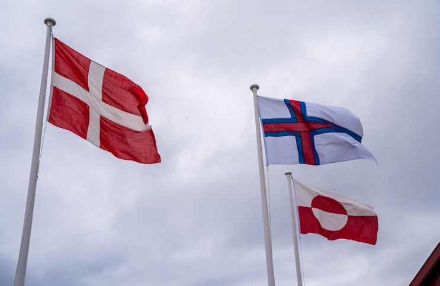
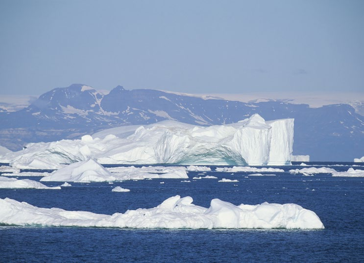
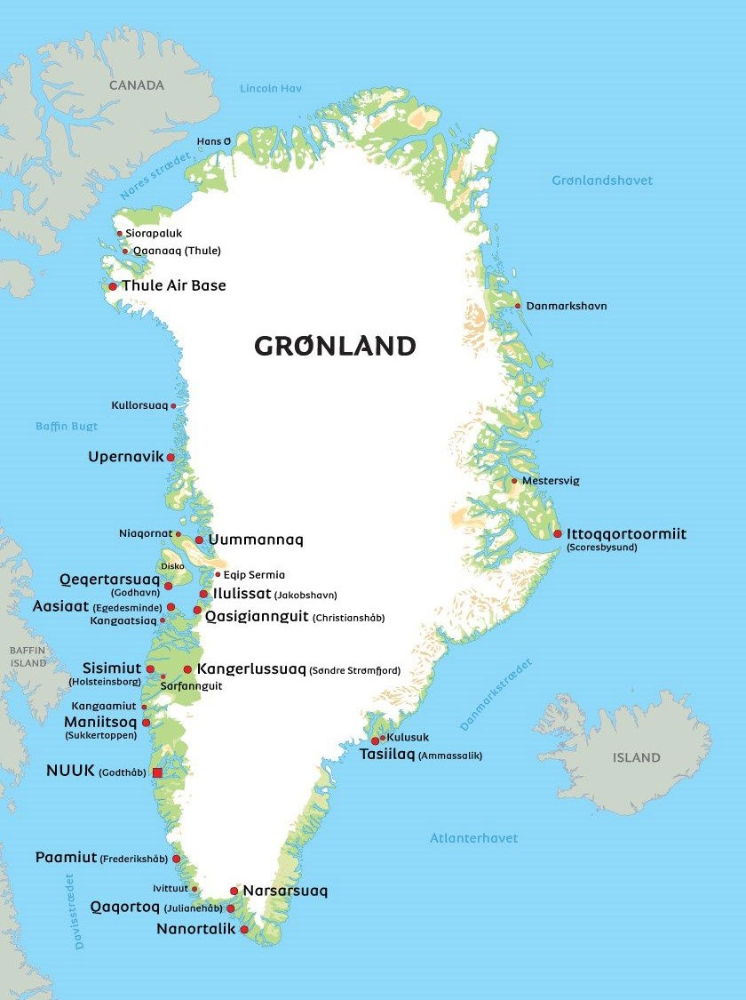
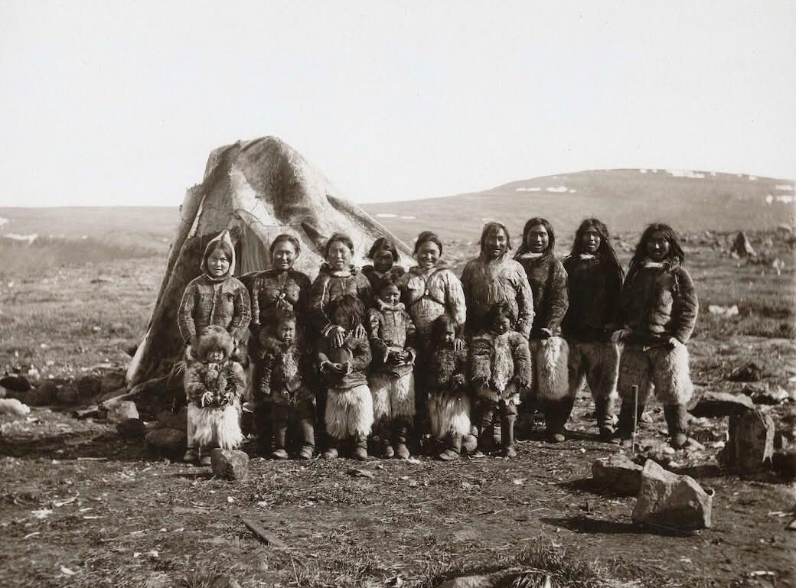
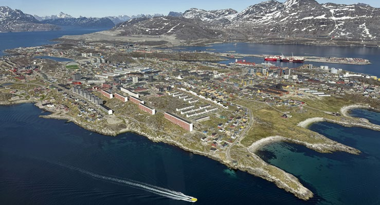
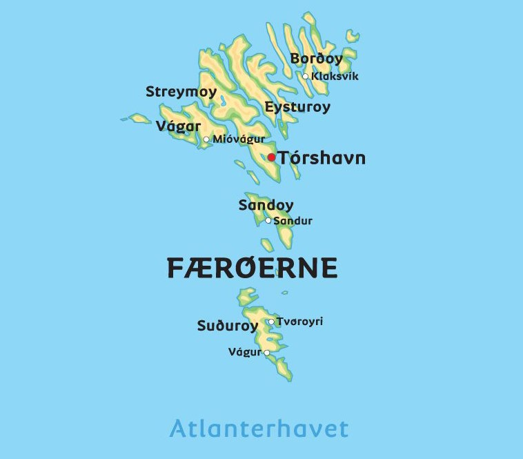
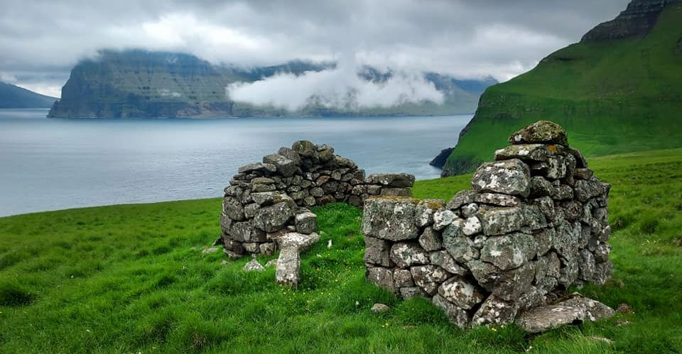
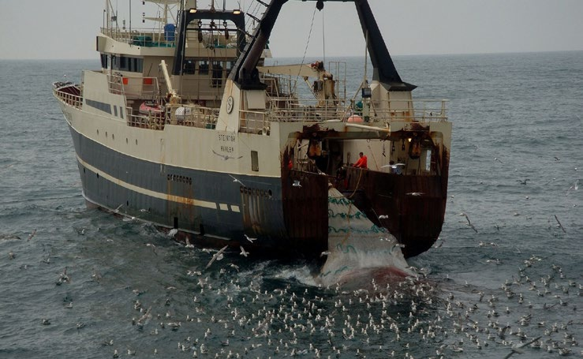
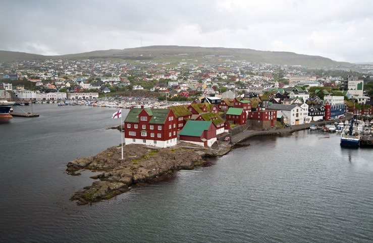

6.6 – RIGSFÆLLESSKABET MELLEM DANMARK, GRØNLAND OG FÆRØERNE
sidde 196
Mellem Danmark, Grønland Og Færøerne
Danmark er i rigsfællesskab med Grønland og Færøerne. Det officielle navn for dette rigsfællesskab er 'Kongeriget Danmark'. Grundloven gælder for alle tre dele af Danmarks rige, der har kongen som statsoverhoved. Færøerne og Grønland vælger hver to medlemmer til Folketinget.
Grønland og Færøerne vedtager på en lang række områder deres egne love og har deres egen forvaltning. På de øvrige områder vedtager Folketinget lovene også for Grønland og Færøerne, og forvaltningen ligger hos de danske myndig heder. Dette gælder blandt andet for udenrigs- og sikkerhedspolitikken samt valuta- og pengepolitikken. I 2005 fik Grønland og Færøerne mulighed for hver især eller sammen at forhandle og indgå visse internationale aftaler på rigets vegne.Danmarks, Færøernes og Grønlands flag. Foto: Ida Marie Odgaard/Ritzau Scanpix.
Danmarks, Færøernes og Grønlands flag. Foto: Ida Marie Odgaard/Ritzau Scanpix.
Læremateriale Til Indfødsretsprøven

sidde 197
Grønland
Grønlands geografi
Grønland er med 2,1 millioner km2 (kvadratkilometer) verdens største ø. Den er cirka lige så stor som Tyskland, Frankrig, Storbritannien, Spanien, Italien og Grækenland tilsammen.
Grønland er geografisk set en del af den nordamerikanske verdensdel og ligger langt mod nord – nordøst for Canada. Grønlands areal udgør 98 procent af arealet for det samlede rigsfællesskab (Danmark, Grønland og Færøerne). Cirka 83 procent af Grønland er dækket af is hele året. Det største sammenhængende område kaldes Indlandsisen. Den dækker 1,7 millioner kvadratkilometer eller cirka 80 procent af Grønlands samlede areal og er op til 3.400 meter tyk.Isbjerge i Qeqertarsuu
Isbjerge i Qeqertarsuup tunua (Diskobugten), Grønland. Foto: Ritzau Scanpix.
Læremateriale Til Indfødsretsprøven

sidde 198
Grønlands højeste punkt er Gunnbjørn Fjeld, som ligger i Østgrønland 3.694 meter over havets overflade. Gunnbjørn Fjeld er i øvrigt også verdens højeste punkt nord for polarcirklen.
De cirka 57.000 indbyggere bor langs kysten. Cirka 20.000 bor i hovedstaden Nuuk (Godthåb), som er Grønlands største by.Kort over Grønland. Graf
Kort over Grønland. Grafik: Albatros.
Læremateriale Til Indfødsretsprøven

sidde 199
Grønlands historie
Grønland har været beboet i årtusinder. Fra omkring år 2500 før Kristus immig rerede mindre grupper af arktiske jægerfolk i flere omgange fra Canada. Både Grønlands nord-, vest- og østkyst blev befolket, og der opstod forskellige fanger kulturer. Fund af blandt andet dyreknogler viser, at de nordlige kulturer har været afhængige af moskusoksejagt, mens de sydlige kulturer har ernæret sig ved sælfangst og rensdyrjagt.
Nutidens grønlandske folk, inuitterne, indvandrede fra Alaska og Canada omkring år 1200 efter Kristus til det nordvestlige Grønland og bredte sig senere til Sydgrønland.
Arkæologiske fund viser, at islændinge og nordmænd allerede i 900-tallet efter Kristus bosatte sig i Grønland. Disse såkaldte nordboere tilsluttede sig i 1200tallet den norske konge og fulgte dermed ind i den dansk-norske union fra 1380. Herefter forsvandt de fra Grønland i løbet af 1400-tallet. Muligvis også fordi klimaforandringer med koldere klima til følge gjorde det vanskeligt at drive landbrug i Grønland. I 1500- og 1600-tallet sendte den danske konge en række ekspeditioner af sted, men en fast dansk tilstedeværelse i Grønland slog først rod i 1700-tallet.
I 1721 rejste præsten Hans Egede til øen for at genfinde nordboerne. Da han ikke fandt nordboerne, slog han sig ned for at handle og gøre inuitterne kristne og i 1728 grundlagde han kolonien Godthåb, som i dag er hovedstad i Grøn land (på grønlandsk: Nuuk). For at fremme kristendommens udbredelse i Grøn land, grundlagde Hans Egede også det grønlandske skriftsprog, så han kunne nedskrive og udgive tekster fra Biblen på grønlændernes eget sprog. Denne tidlige udbredelse af inuitternes sprog på skrift har haft stor betydning for, at sproget i dag er bedre bevaret i Grønland end blandt inuitbefolkningerne i Canada og Alaska.
I løbet af 1700-tallet og 1800-tallet anlagde Danmark flere kolonier i Grønland, hvorfra man handlede med grønlandske produkter, som blev solgt i Europa. Det gjaldt især spæk (fedt) fra sæler og hvaler, der kunne koges til tran (en olie), som man brugte til belysning. Med de elektriske lampers udbredelse i begyndelsen af 1900-tallet blev fiskeri i stedet Grønlands vigtigste erhverv.
Fra 1776 til 1950 havde et statsligt selskab, Den Kongelige Grønlandske Handel, monopol (eneret) på al handel i Grønland og administrerede også de grøn landske kolonier. Det indebar, at grønlænderne kun måtte sælge deres varer til de danske kolonibestyrere, som derigennem sikrede sig kontrol med handlen. Omvendt havde Den Kongelige Danske Grønlandshandel også pligt til at forsyne de små grønlandske bygder med varer udefra, for eksempel mel, gryn, salt, sukker, knive, jagtvåben og tøj af bomuld. Grønland var i denne periode også et lukket land for udlændinge. Det var kun personer med en særlig tilladelse
Læremateriale Til Indfødsretsprøven
sidde 200
og opgave fra den danske stat, for eksempel som embedsmænd, håndværkere, læger eller præster, der havde adgang.Grønlændere foran et telt af skind i 1909.
Grønlændere foran et telt af skind i 1909. Foto: N. Krabbe.
Under 2. Verdenskrig blev Grønland i modsætning til Danmark ikke besat af tyskerne. I strid med den tyske besættelsesmagts – og dermed også den danske regerings – ønsker indgik Danmarks ambassadør i Washington DC, Henrik Kauffmann, i 1941 en aftale med USA, som gav amerikanerne lov til at oprette militære baser i Grønland. Det var blandt andet nødvendigt for at beskytte og forsyne indbyggerne i Grønland med madvarer, byggematerialer, medicin og brændstof, som man hidtil havde fået fra Danmark. Amerikanerne ønskede omvendt at forhindre, at andre lande – særligt Tyskland – besatte Grønland, og derudover skulle USA bruge mineraler fra Grønlands undergrund til sin krigs produktion.
Efter 2. Verdenskrig fortsatte USA med at have militære baser i Grønland efter aftale med Danmark. I begyndelsen af 1950’erne byggede amerikanerne en base i Qaanaaq (Thule) i Nordgrønland, hvorved bopladsen for flere grønlandske fami lier blev flyttet for at give plads til basen. Basen er USA’s nordligste militære base, og der var kun kort afstand til Sovjetunionen og derfor var den central for luftforsvaret af USA og NATO. Tidligere har basen været kendt som ’Thule Air Base’ (Thule Luftbase) eller Thulebasen. I 2023 blev den omdøbt til ’Pituffik Space Base’ (Pituffik Rumbase), og den bruges stadig af USA.
Læremateriale Til Indfødsretsprøven

sidde 201
Grønlands selvstyre
Indtil 1953 var Grønland en koloni under Danmark. Ved grundlovsændringen i 1953 kom Grønland under grundloven på lige fod med Danmark og Færøerne. Grønland og Danmark blev i 1978 enige om at etablere hjemmestyre for Grønland. Efter en folkeafstemning fik Grønland ved lov hjemmestyre i 1979, som indebar, at Grønland gradvist i de følgende år overtog ansvaret for (og muligheden for at vedtage egne love på) en række områder, for eksempel socialpolitik, skatter og afgifter samt undervisning. I 2009 blev hjemmestyreordningen erstattet med en selvstyreordning, der gav Grønland mulighed for at få selvbestemmelse på endnu flere områder. Det gælder blandt andet retsvæsen samt forvaltning af ressourcer og råstoffer i undergrunden. Desuden blev det fastslået, at grønlæn derne er et folk i egen ret med adkomst til fuld selvstændighed, når de selv ønsker det.
Grønlands nationaldag er den 21. juni, fordi det er årets længste og lyseste dag. Selvstyreordningen trådte derfor i kraft den 21. juni 2009, og det grønlandske flag blev hejst første gang den 21. juni 1985. Det kaldes på grønlandsk ’Erfalasorput’, som betyder ’vort flag’. Flagets farver er rød og hvid som i Dannebrog. Cirklen i flaget symboliserer den opadgående sol i det hvide grønlandske landskab. Flaget anvendes meget i Grønland.
Selvstyret består af Grønlands Landsting (Inatsisartut), der er en folkevalgt og lovgivende forsamling, og en forvaltning, der ledes af Grønlands Landsstyre (Naalakkersuisut). Landsstyret svarer til en regering og har den politiske ledelse. Landstinget har 31 medlemmer, der vælges for fire år ad gangen. Formanden for landsstyret (landsstyreformanden) vælges af Landstinget. Landstinget vedtager lovene på alle de områder, som selvstyret har overtaget. Det drejer sig blandt andet om følgende områder: socialvæsen, undervisning, sundhedsvæsen, skatter og afgifter, bolig, erhvervsfiskeri og jagt, råstoffer, kommunale forhold, miljø, kultur og fritid samt infrastruktur.Grønlands hovedstad Nuuk set fra luften. Foto
Grønlands hovedstad Nuuk set fra luften. Foto: Quintin Solviev.
Læremateriale Til Indfødsretsprøven

sidde 202
Grønland modtager i 2025 et økonomisk tilskud fra den danske stat på lidt over fire milliarder kroner om året, der dækker godt halvdelen af selvstyrets udgifter. Fiskeri, især af rejer, er den vigtigste eksportindtægtskilde for det grønlandske samfund. Med selvstyreordningen fra 2009 blev det fastslået, at indtægter fra råstofaktiviteter i Grønland tilfalder Grønlands selvstyre. Samtidig blev det vedtaget, at sådanne indtægter skulle medføre en reduktion i den danske stats tilskud til Grønland.
Hovederhvervene i Grønland er fiskeri og turisme. Det traditionelle fangerer hverv, hvor man levede af at fange ikke mindst sæler, er derimod uddøende.
Grønland blev som en del af kongeriget Danmark medlem af EF (nu EU) i 1973, men blev efter en folkeafstemning i Grønland meldt ud igen i 1985.
Grønlands kulturliv
Grønland har et rigt kulturliv, som strækker sig fra traditionel trommedans og til moderne rockmusik. De ældgamle grønlandske sagn er nedskrevet og læres i skolerne. Herudover er der en udbredt produktion af kunsthåndværk udskåret af ben og tænder fra dyrene i og omkring Grønland.
Hans Lynge (1906-88) regnes som en af de mest betydningsfulde personligheder inden for grønlandsk billedkunst og litteratur. Hans Lynge var også politisk aktiv, kritiker af Danmarks indflydelse på Grønland og fortaler for større grønlandsk selvstændighed. Hans kunst er præget af en stærk kærlighed til den oprindelige grønlandske kulturarv og inuitternes traditionelle levevis. Han er især kendt for romanen ’Ersinngitsup piumasaa’ (Den usynliges vilje) fra 1938, der handler om hævn og konflikten mellem traditionel ære og moderne samvittighed.
I 2021 fik den grønlandske forfatter Niviaq Korneliussen (født 1990) Nordisk Råds Litteraturpris for romanen ’Naasuliardarpi’ (Blomsterdalen) fra 2020. Bogen handler om sociale og psykiske problemer blandt unge grønlændere og deres følelse af hverken at høre til i traditionel grønlandsk kultur eller i en moderne storby som København. Og om politikeres, myndigheders, familiers og venners manglende evne og vilje til at hjælpe dem.
Kristendommen spiller en betydelig rolle i Grønland. Kirken i Grønland er en del af den danske folkekirke, men hører under Grønlands selvstyre. Grønland har sin egen biskop.
Gudstjenesten i Grønland foregår på grønlandsk, og der har udviklet sig en særlig grønlandsk tradition for, hvordan salmer synges i kirkerne.
Læremateriale Til Indfødsretsprøven
sidde 203
Færøerne
Færøernes geografi
Færøerne er en øgruppe bestående af 18 øer, der ligger i Atlanterhavet mellem Skotland, Island og Norge. Øernes samlede areal på 1.400 km2 (kvadratkilo meter) svarer omtrent til Lollands.
Færøerne har 55.000 indbyggere. Cirka 14.000 af dem bor i hovedstaden Tórshavn, som også er Færøernes største by.
Landskabet er præget af stejle, græsklædte klipper. Det højeste punkt (Slættara tindur) ligger 880 meter over havet.
Færøerne har et klima med milde vintre og kølige somre samt store mængder af regn. Vinteren i Tórshavn er således på trods af den nordlige beliggenhed lidt varmere end i Danmark. Resten af året er det dog noget køligere end i Danmark. Vejret skifter ofte hurtigt, og på trods af landets lille størrelse er der ofte stor forskel på vejret fra ø til ø. Kort over Færøerne. Grafik Alba
Kort over Færøerne. Grafik Albatros.
Læremateriale Til Indfødsretsprøven

sidde 204
Færøernes historie
Færøerne blev først befolket i 600-tallet af irske munke, der bosatte sig på øerne. Munkene blev imidlertid hurtigt fortrængt af vikinger fra primært Norge, der foretog en omfattende bosættelse af Færøerne. Dermed blev Færøerne en del af det nordatlantiske kultur- og handelsfællesskab.
I løbet af middelalderen blev Færøerne underlagt den norske konge og fulgte således i 1380 med Norge ind i unionen med Danmark.
Færøerne fik sit navn fra det oldnordiske ord fær, som betyder får. Det henviser til de mange får, der opdrættes på øerne, og som frem til 1800-tallet var Færø ernes vigtigste erhverv. Og uld og tøj lavet af uld var øernes absolut største handelsvare med udlandet. Den danske konge fik med tiden direkte kontrol med handlen på øerne. Færingerne måtte kun sælge deres varer til faste priser til danske købmænd og fra 1708 kun til Den Kongelige Monopolhandel i Tórshavn. Omvendt havde Danmark pligt til at forsyne den færøske befolkning med nødven dige varer udefra, for eksempel korn, tømmer, jern og salt. Danmark kunne dog ikke altid beskytte øerne, som derfor ofte fik besøg af udenlandske smuglere og pirater. Blandet andet blev øerne i 1629 angrebet af nordafrikanske pirater, der slog seks personer ihjel og bortførte og solgte cirka 30 som slaver i Nordafrika.
Færøerne kom ind under den første danske grundlov i 1849 og blev dermed også repræsenteret i Folketinget og Landstinget. Handlen med udlandet blev givet fri i 1856, og fra slutningen af 1800-tallet udviklede Færøerne sig til en moderne, international fiskerination. Det var især det store torskefiskeri, der nu blev øernes vigtigste handelsvare.
Siden reformationen i 1500-tallet havde kirken, administrationen og skolen fuld stændig været domineret af det danske sprog, mens færøsk i århundreder især Ruiner fra 1700-tall
Ruiner fra 1700-tallet af stalde til får ved bygden Trøllanes på Færøerne. Foto: Tue Schou Pedersen.
Læremateriale Til Indfødsretsprøven

sidde 205
overlevede som et mundtligt sprog gennem en rig tradition for folkeviser. Først i midten af 1800-tallet blev der skabt et officielt færøsk skriftsprog, der sammen en stigende national bevidsthed, blev afgørende for, at det færøske sprog over levede, og at det i dag er hovedsproget på øerne frem for dansk.
Da Danmark i 1940 blev besat af tyskerne, blev Færøerne besat af Storbritan nien. Øerne havde stor strategisk betydning for transportruterne mellem USA og Europa, og derfor ønskede briterne at forhindre, at Tyskland besatte øerne.
Storbritannien blandede sig ikke videre i færøsk politik, og derfor blev det muligt for færingerne at styre mere selv, end de havde været vant til under Danmark. Da Storbritannien efter krigens afslutning i 1945 gav Færøerne tilbage til Danmark igen, var ønsket om selvstændighed på øerne vokset betydeligt.
Efter 2. Verdenskrig indledtes forhandlinger om en hjemmestyreordning for Færøerne. En folkeafstemning på Færøerne viste imidlertid et meget lille flertal for uafhængighed af Danmark. De fleste politikere i Lagtinget samt den danske regering opfattede ikke resultatet som klart. Efter et nyt valg til Lagtinget blev der enighed mellem Færøerne og Danmark om hjemmestyre for Færøerne, som derfor blev i rigsfællesskab med Danmark. Færøerne fik hjemmestyre ved lov i 1948. Hjemmestyret består af Lagtinget (en folkevalgt og lovgivende forsamling) og en forvaltning, der ledes af et landsstyre (det vil sige den politiske ledelse). Lagtinget kan have op til 33 medlemmer, der vælges for fire år ad gangen. Formanden for landsstyret (lagmanden) vælges af Lagtinget. Lagtinget vedtager lovene på alle de områder, som hjemmestyret har overtaget.
Det drejer sig blandt andet om følgende områder: socialvæsen, undervisning, skat, bolig, fiskeri, råstoffer i undergrunden, kommunale forhold, kultur og fritid samt infrastruktur. I 2005 blev den færøske hjemmestyreordning udvidet.Fiskeri fra fær
Fiskeri fra færøsk trawler. Foto: Erik Christensen.
Læremateriale Til Indfødsretsprøven

sidde 206
Færøerne kan i dag overtage alle områder, bortset fra statsforfatningen, stats borgerskab, Højesteret, udenrigs-, forsvars- og sikkerhedspolitik samt valutaog pengepolitik. Færøerne modtager i 2025 et økonomisk tilskud fra den danske stat på cirka 575 millioner kroner om året. Fiskeri er den klart vigtigste ekspor tindtægtskilde for det færøske samfund, men også skibsfart og turisme har stor betydning for økonomien. Da Danmark blev medlem af EF (EU) i 1973, valgte Færøerne at stå udenfor. Det indebærer også, at Færøerne kan indgå sine egne handelsaftaler uden om EU.
Kristendommen spiller generelt en større rolle for samfundslivet på Færø erne end i Danmark. Der er således fortsat mange færinger, der går i kirke om søndagen. Mens Danmark indførte fri abort i 1973, og et stort flertal i den danske befolkning støtter den fri abort, er der større uenighed om spørgsmålet på Færøerne. Først i 2025 vedtog Lagtinget at indføre fri abort på øerne. Den gælder frem til den 12. graviditetsuge. 17 medlemmer af Lagtinget stemte for og 16 imod, og dermed var der kun lige præcis flertal for det. Hidtil har loven kun tilladt abort, hvis kvinden er blevet voldtaget, eller hvis graviditeten truer hendes liv og helbred.
Færøsk kulturliv
Færøerne har et rigt kulturliv. Forfattere som de to fætre Jørgen-Frantz Jacobsen (1900-38) og William Heinesen (1900-91) er kendte på såvel Færøerne, i Danmark som flere steder i udlandet.
Jørgen-Frantz Jacobsens hovedværk er Barbara, som udkom i 1939 (året efter hans død). Romanen udspiller sig i 1700-tallet på Færøerne. Barbara er en yngre kvinde, som let forelsker sig og også har stor tiltrækning på mænd. Alle i det lille, religiøse lokalsamfund har en mening om Barbara. Det fortælles blandt andet, at det er hendes ’synd’, der er skyld i hendes to tidligere ægtemænds – to tidligere præsters – død og i at have forført den nye præst. Ligesom Færøernes vilde natur samt barske og omskiftelige vejrforhold, lader Barbaras natur sig heller ikke tæmme og har stor indvirkning på lokalsamfundet.
Temaet om social afvigelse, det vil sige når menneskers livsførelse ikke passer ind i et lille lokalsamfund med snævre grænser for rigtigt og forkert, går også igen i William Heinesens hovedværk De fortabte spillemænd (1950). I centrum af fortællingen står en gruppe spillemænd, som lever et liv med musik, alkohol og kvinder. Den arbejdsomme, sparsommelige og religiøse lokalbefolkning har svært ved at acceptere denne ’udsvævende’ livsførelse, og derfor kan spille mændene ikke falde til og opnå fodfæste og stabilitet i tilværelsen.
De senere år har digteren Vónbjørt Vang (født 1974) gjort sig bemærket. I 2025 fik hun Nordisk Råds Litteraturpris for digtsamlingen 'Svørt Okidé' (Sort Okidé), som handler om en mors frygt for at miste sin teenagesøn, der er forsvundet ud i misbrug af alkohol og narkotika og senere ind i det psykiatriske system.
Læremateriale Til Indfødsretsprøven
sidde 207
Også færøsk malerkunst er på et meget højt niveau. Færøske malere maler ofte færøske motiver som den vilde natur og livet i de små landsbyer. Men på en måde og med et farvevalg, som hæver det færøske op til noget, som alle menne sker kan genkende.
Færøernes flag kaldes ’Merkið’ (Mærket). Det blev udarbejdet i 1919 og er et flag af nordisk type med et kors og med farverne hvidt, blåt og rødt. Eftersom Danmark var blevet besat af Tyskland i 1940 og Færøerne af Storbritannien, forlangte briterne, at det skulle være muligt at skelne mellem danske og færøske skibe, som hidtil også havde brugt Dannebrog. Derfor godkendte Storbritannien Merkið som Færøernes flag den 25. april 1940. Hvert år den 25. april samles færingerne til folkemøder for at fejre deres flag. Man hører typisk en flagtale og synger fællessang.
Flaget ses også i enhver by på Færøerne den 29. juli, som er den færøske natio naldag. På denne dag afholdes ’Ólavsøka’ Olaifesten, som er opkaldt efter Olav den Hellige, som var konge af Norge og døde i et slag den 29. juli 1030. De fleste af datidens færinger var efterkommere af norske udvandrere, og derfor er Olav den Hellige blevet Færøernes skytshelgen, det vil sige den helgen, der siges at beskytte Færøerne.Færøernes hovedstad og største by Torshavn. Foto: Ritzau Scanpi
Færøernes hovedstad og største by Tórshavn. Foto: Stig Nygaard.
Læremateriale Til Indfødsretsprøven

Fonte: Læremateriale til Indfødsretsprøven, SIRI.